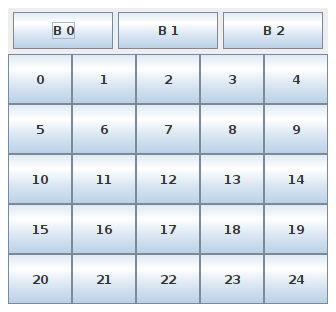
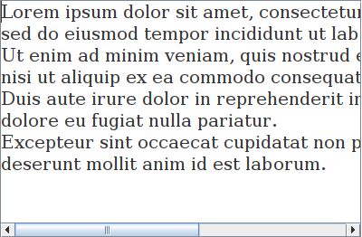

Els contenidors de primer nivell són:
També es poden considerar de primer nivell els diàlegs simples que hereten de JComponent:
Aquests contenidors ja s'han vist anteriorment, però per conèixer millor l'estructura interna es pot consultar com utilitzar els contenidors de primer nivell.
Els contenidors també són components (hereten de JComponent), per tant, tenen els mateixos mètodes per modificar la seva mida i el seu aspecte.
Els principals són:
En general, en aquests contenidors es poden afegir i treure components amb els mètodes add(Component), remove(Component) i removeAll(), però alguns tenen mètodes especials.
Una forma fàcil d'agrupar objectes i organitzar-los dins d'una finestra és utilitzar un o més JPanel.
Un JPanel pot contenir altres JPanel, i cada un es pot configurar amb un layout diferent.
En el següent exemple es crea una estructura com la següent:

public class Panells extends JFrame {
final int MIDA = 25;
public Panells() {
// Configurar el panell principal de la finestra
// per fer que posi els seus components en vertical
// (per defecte, el panell principal utilitza BorderLayout)
Container panell = getContentPane();
panell.setLayout(new BoxLayout(panell, BoxLayout.Y_AXIS));
// Panell amb 3 botons posats en horitzontal
JPanel botons1 = new JPanel();
new BoxLayout(botons1, BoxLayout.X_AXIS);
afegirBotons(botons1, 3, "B ", MIDA * 4, MIDA * 3 / 2);
panell.add(botons1); // Afegir al panell principal
// Panell amb 25 botons posats en una graella de 5x5
JPanel botons2 = new JPanel(new GridLayout(5, 5));
afegirBotons(botons2, 25, "", MIDA, MIDA * 2);
panell.add(botons2); // Afegir al panell principal
// Mostrar finestra
pack();
setResizable(false);
setVisible(true);
setDefaultCloseOperation(JFrame.EXIT_ON_CLOSE);
}
private void afegirBotons(JPanel jp, int nb, String prefix, int w, int h) {
JButton jb;
for (int i = 0; i < nb; ++i) {
jb = new JButton(prefix + i);
jb.setPreferredSize(new Dimension(w, h));
jp.add(jb);
}
}
public static void main(String[] args) {
new Panells();
}
}
Aquest tipus de contenidor s'utlitza quan el contingut és massa gran per poder-lo mostrar completament.
En aquest cas, aquest tipus de panell mostra unes barres de desplaçament per poder moure la vista.
Dins d'aquest tipus de contenidor s'acostuma a posar àrees de text (JTextArea), llistes (JList), arbres (JTree), taules (JTable), àrees de dibuix (Canvas) o imatges (Image).
JTextArea textArea = new JTextArea();
textArea.setFont(new Font("Serif", Font.PLAIN, 20));
textArea.setText(text); // 'text' és qualsevol text una mica llarg
JScrollPane scrollPane = new JScrollPane(textArea);
finestra.setContentPane(scrollPane); // Canvia el contenidor principal
Si es vol canviar el component, cal fer-ho a través de l'objecte JViewport que conté aquest panell:
scrollPane.getViewport().add(textArea);
